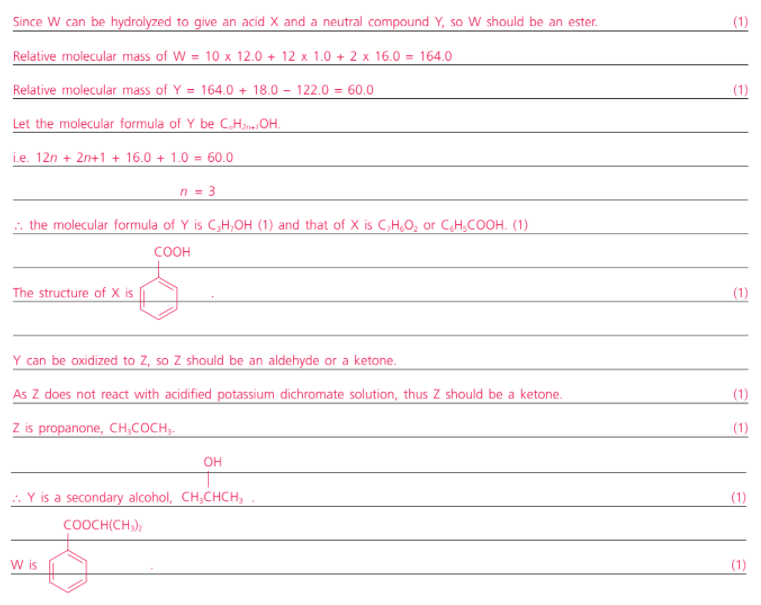

Deduction of Organic Compounds
Question 1
A neutral carbon compound W has molecular formula C10H12O2.
On treatment with boiling sodium hydroxide solution followed by acidification, W gives an acid X (relative molecular mass = 122.0) and a neutral compound Y.
Y can be oxidized with acidified potassium dichromate solution to another neutral compound Z. Z does not react with acidified potassium dichromate solution.
Deduce the possible structures of W, X, Y and Z. Explain your reasoning.
